Aprendendo AI
os talks do dia, explicados como numa aula particular
Medir antes de automatizar, autorizar antes de pagar
Seis talks sobre como levar agentes a trabalho sério em finanças e produto. O dia abre com estratégia: quando vale esperar o próximo modelo e como quebrar uma decisão de investimento em etapas, cada uma com o executor certo. Depois vem a medição, com um agente de back-office que foi de 41% a 97% de acerto sem trocar de modelo e o método do Netflix para avaliar tarefas sem resposta certa. No fim, segurança e autorização: o Wise troca dezenas de cliques de aprovação por um acordo travado, e a Keycard com o Temporal mostra tokens curtos por chamada e agentes que sobrevivem a uma queda no meio da tarefa.
Essenciais do dia
- Como subir um agente de 41% para 97% de acerto Agente de back-office melhora com definições escritas, evals em camadas e iteração sobre falhas reais, antes de qualquer troca de modelo. Agentes · ≈ 6 min
- Como o Netflix avalia IA quando não há resposta certa Em tarefas subjetivas, a avaliação precisa de humanos calibrados, juízes automáticos checados contra eles e testes em produção, com estatística contra o ruído. Evals · ≈ 7 min
- Acordo travado: como dar autonomia a agentes que movem dinheiro Peça ao cliente que aprove o trabalho inteiro uma vez; o agente escolhe os passos e o software de pagamento já existente impõe os limites. Agentes · ≈ 5 min
Mais 3 no radar
Buscar entre todos os talks · Trilhas por tema · Receber por RSS
Edições anteriores
cada dia de talks vira uma aula
Semana de 2 nov
A semana em 5 ideias →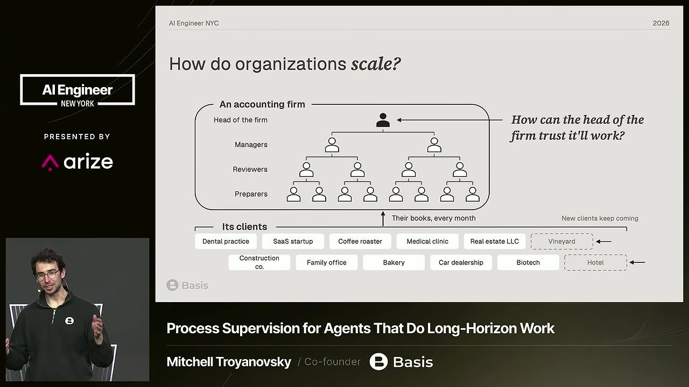
quarta, 4 nov 2026 Provar que o agente é seguro, previsível e barato 11 talks · 3 essenciais · Produto, Dados e RAG, Agentes, Evals, Modelos, Infraestrutura segunda, 2 nov 2026
Quem revisa, quem controla e quem treina o modelo
15 talks · 3 essenciais · Carreira e equipes, Produto, Agentes, Engenharia de software, Evals, Dados e RAG, Modelos, Infraestrutura
segunda, 2 nov 2026
Quem revisa, quem controla e quem treina o modelo
15 talks · 3 essenciais · Carreira e equipes, Produto, Agentes, Engenharia de software, Evals, Dados e RAG, Modelos, Infraestrutura
Semana de 26 out
A semana em 5 ideias →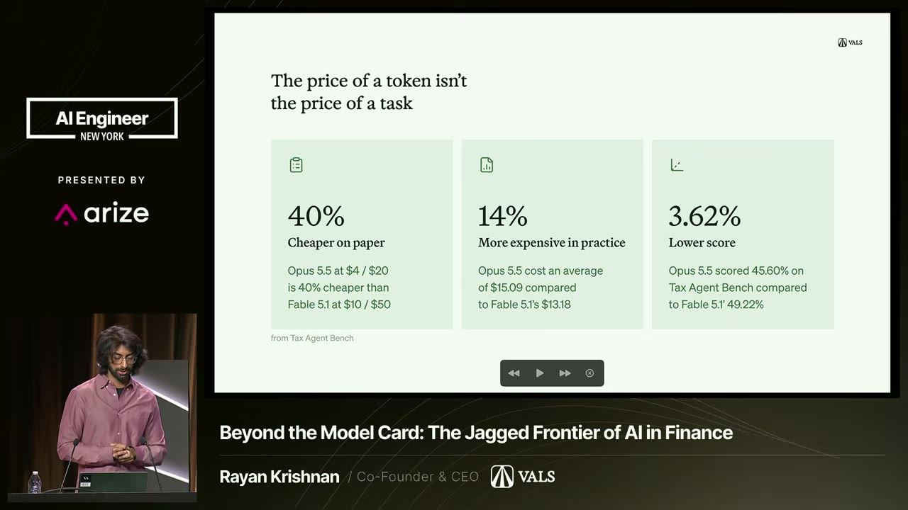
sexta, 30 out 2026 Agentes que lembram, pagam e erram: onde pôr os guardas 6 talks · 2 essenciais · Carreira e equipes, Evals, Engenharia de software, Agentes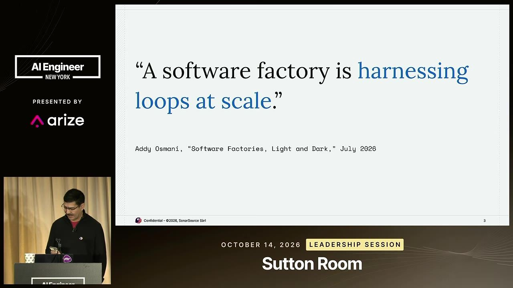
quinta, 29 out 2026 Código barato, confiança cara: verificar o que os agentes escrevem 9 talks · 3 essenciais · Engenharia de software, Agentes, Infraestrutura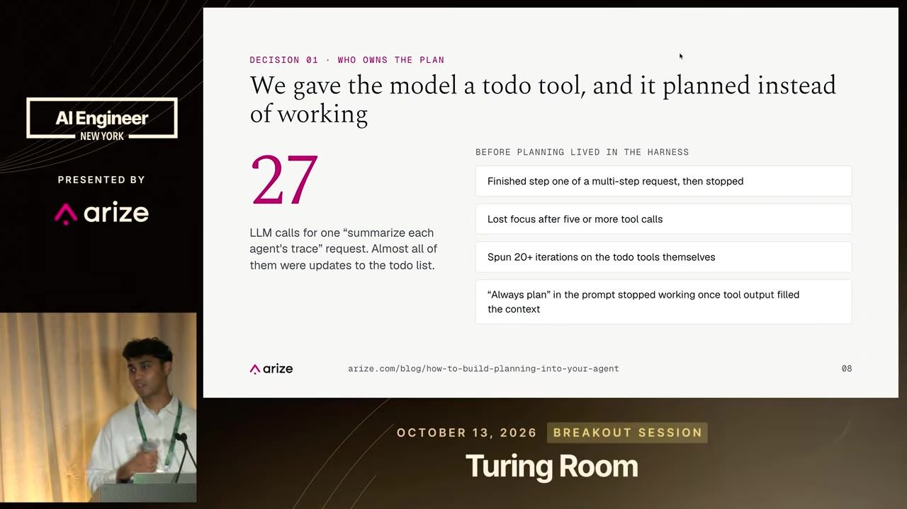
terça, 27 out 2026 Agentes em produção: controle, sandbox e testes reais 11 talks · 3 essenciais · Agentes, Engenharia de software, Evals, InfraestruturaSemana de 19 out
A semana em 5 ideias →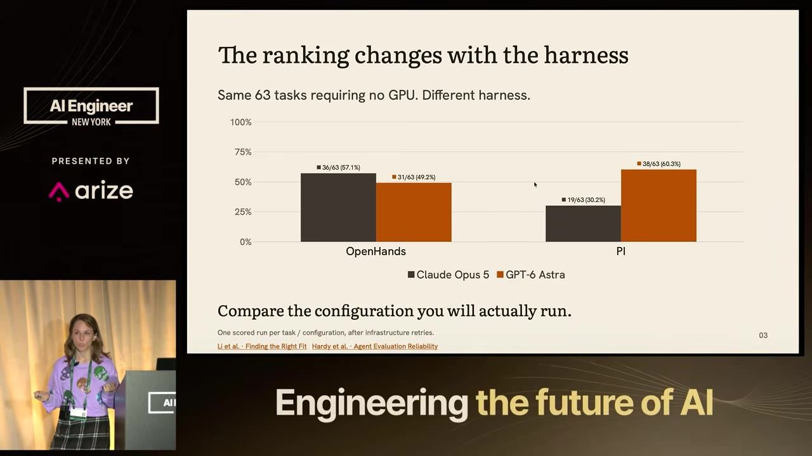
domingo, 25 out 2026 IA nas finanças, evals e o novo trabalho do engenheiro 24 talks · 3 essenciais · Carreira e equipes, Agentes, Produto, Evals, Dados e RAG, Infraestrutura, Modelos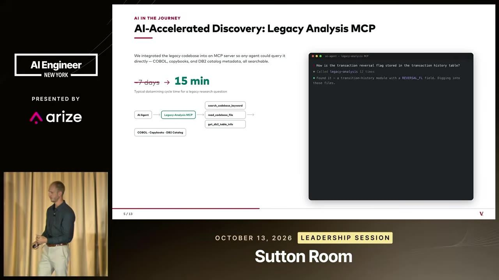
quarta, 21 out 2026 Quando escrever código deixa de ser o gargalo 5 talks · 2 essenciais · Produto, Engenharia de software, Agentes, Modelos terça, 20 out 2026
IA dentro do dinheiro: bancos, investidores, agentes pagantes e GPUs
5 talks · 2 essenciais · Produto, Agentes, Engenharia de software, Infraestrutura
terça, 20 out 2026
IA dentro do dinheiro: bancos, investidores, agentes pagantes e GPUs
5 talks · 2 essenciais · Produto, Agentes, Engenharia de software, Infraestrutura
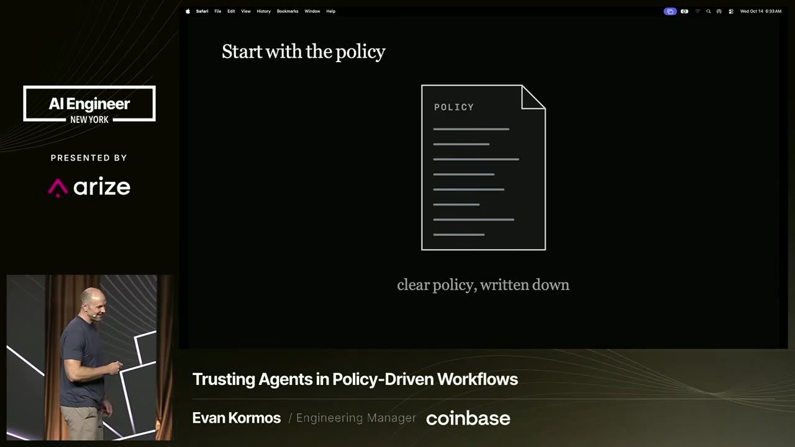
segunda, 19 out 2026 Quando confiar no agente: checagem, teste no passado e troca de modelo 6 talks · 2 essenciais · Produto, Agentes, Evals, Dados e RAGSemana de 12 out
A semana em 5 ideias →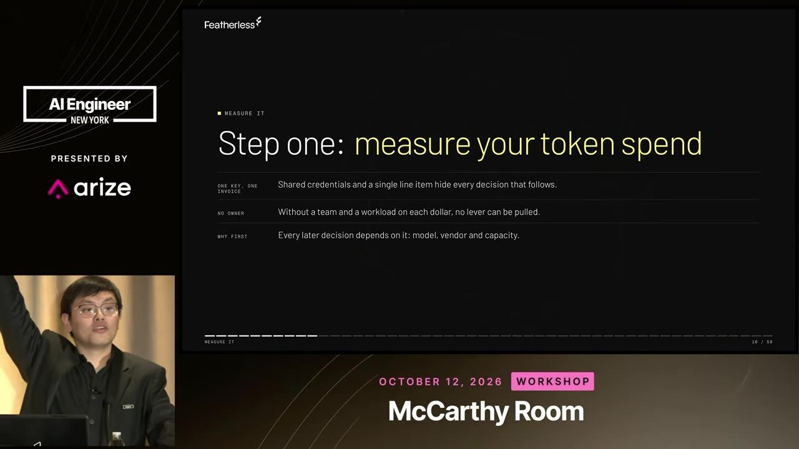
domingo, 18 out 2026 Custo, contrato e prova para agentes saírem da demo 6 talks · 2 essenciais · Dados e RAG, Produto, Infraestrutura, Agentes, Evals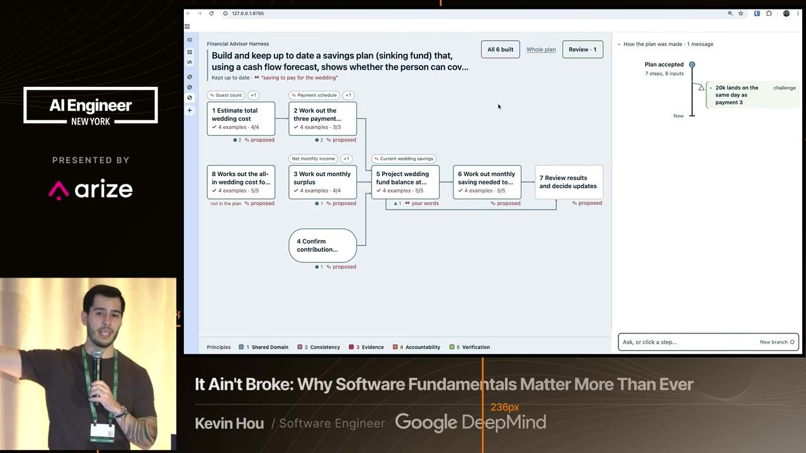
sábado, 17 out 2026 Agentes que mexem com dinheiro precisam de limites e provas 4 talks · 2 essenciais · Agentes, Evals sexta, 16 out 2026
IA em finanças: gerar ficou fácil, verificar virou o trabalho
17 talks · 3 essenciais · Carreira e equipes, Agentes, Evals, Produto, Engenharia de software, Infraestrutura, Modelos
segunda, 12 out 2026
Agentes em produção: segurança, contexto e inferência
57 talks · 3 essenciais · Carreira e equipes, Produto, Agentes, Engenharia de software, Evals, Infraestrutura, Dados e RAG, Modelos
sexta, 16 out 2026
IA em finanças: gerar ficou fácil, verificar virou o trabalho
17 talks · 3 essenciais · Carreira e equipes, Agentes, Evals, Produto, Engenharia de software, Infraestrutura, Modelos
segunda, 12 out 2026
Agentes em produção: segurança, contexto e inferência
57 talks · 3 essenciais · Carreira e equipes, Produto, Agentes, Engenharia de software, Evals, Infraestrutura, Dados e RAG, Modelos
Semana de 5 out
A semana em 5 ideias → sexta, 9 out 2026
Agentes precisam de regras, memória e dados bem servidos
8 talks · 3 essenciais · Engenharia de software, Agentes, Dados e RAG, Modelos, Infraestrutura
quinta, 8 out 2026
Contexto, confiança e memória para agentes em produção
10 talks · 3 essenciais · Carreira e equipes, Agentes, Engenharia de software, Evals
sexta, 9 out 2026
Agentes precisam de regras, memória e dados bem servidos
8 talks · 3 essenciais · Engenharia de software, Agentes, Dados e RAG, Modelos, Infraestrutura
quinta, 8 out 2026
Contexto, confiança e memória para agentes em produção
10 talks · 3 essenciais · Carreira e equipes, Agentes, Engenharia de software, Evals
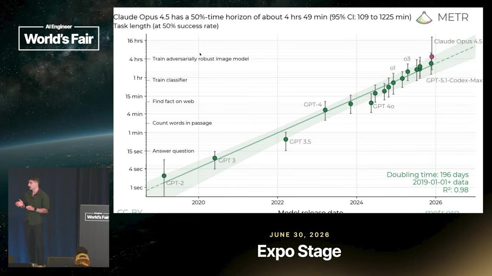
quarta, 7 out 2026 Da fábrica de software à infraestrutura que a sustenta 15 talks · 3 essenciais · Carreira e equipes, Engenharia de software, Agentes, Evals, Dados e RAG, Infraestrutura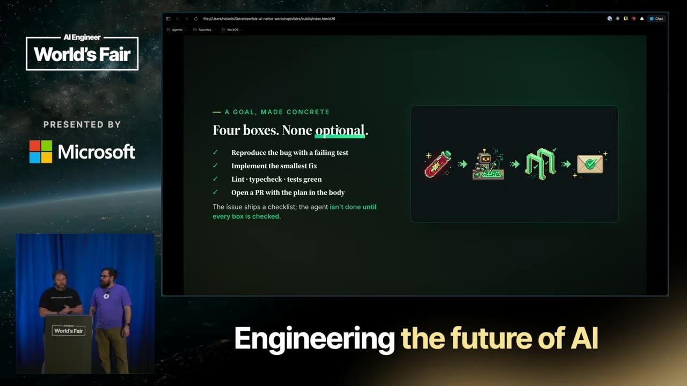
segunda, 5 out 2026 Medir antes de confiar: evals, traces e o agente em produção 18 talks · 3 essenciais · Carreira e equipes, Produto, Agentes, Modelos, Infraestrutura, Dados e RAG, EvalsSemana de 28 set
A semana em 5 ideias →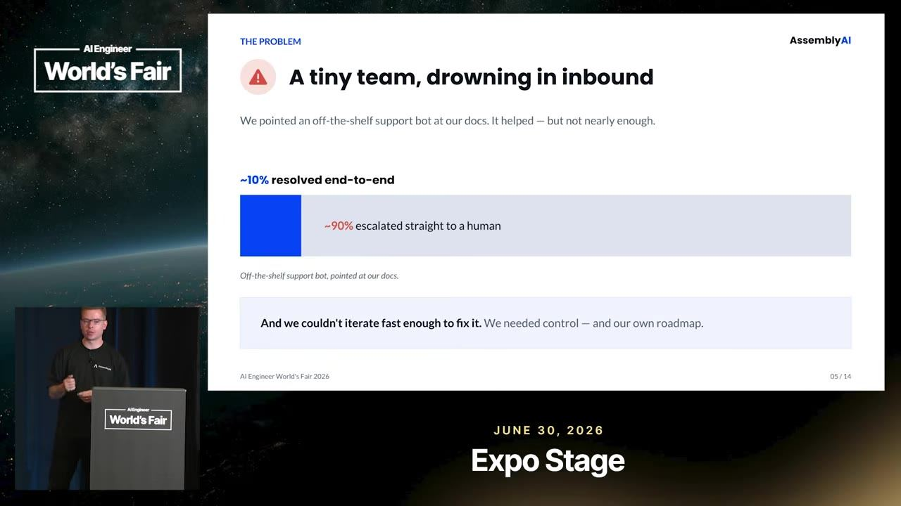
domingo, 4 out 2026 Agentes no mundo real: catálogo, suporte, código e espera 5 talks · 2 essenciais · Dados e RAG, Agentes, Engenharia de software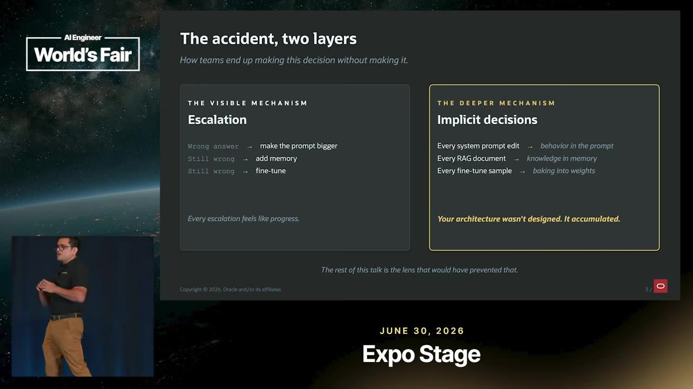
sábado, 3 out 2026 Quando o usuário vira agente: interface, memória e infraestrutura 7 talks · 2 essenciais · Agentes, Dados e RAG, Engenharia de software, Infraestrutura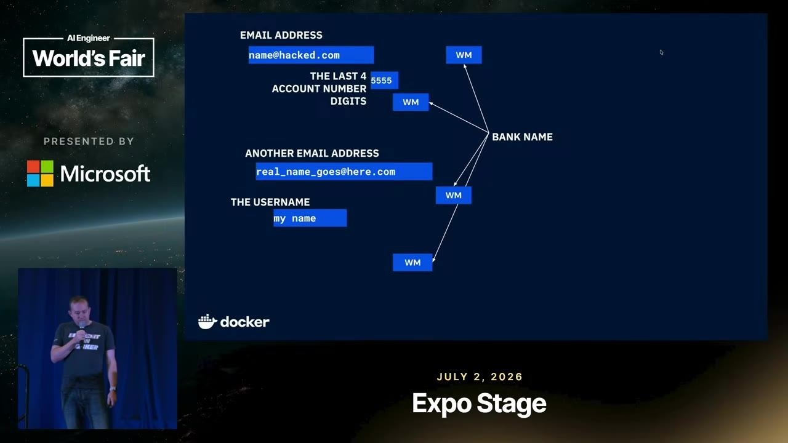
sexta, 2 out 2026 Agentes fora do demo: segurança, custo e verificação 10 talks · 3 essenciais · Infraestrutura, Dados e RAG, Agentes, Engenharia de software, Evals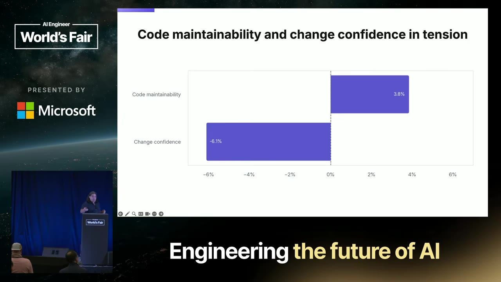
quarta, 30 set 2026 Gerar código ficou fácil, o gargalo mudou de lugar 4 talks · 2 essenciais · Carreira e equipes, Engenharia de software, AgentesSemana de 21 set
A semana em 5 ideias →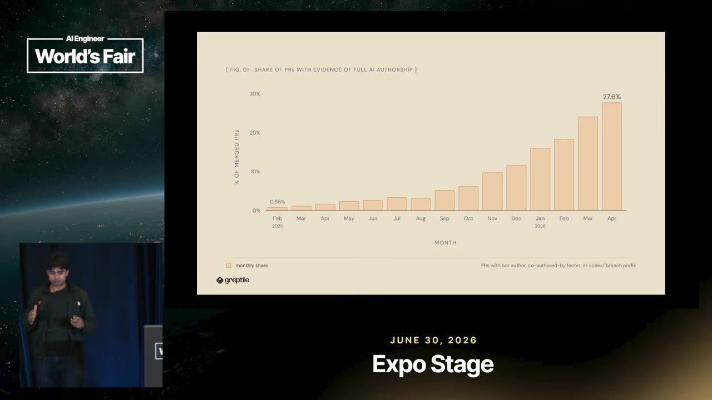
domingo, 27 set 2026 O dia das fábricas de software 10 talks · 3 essenciais · Engenharia de software, Modelos, Agentes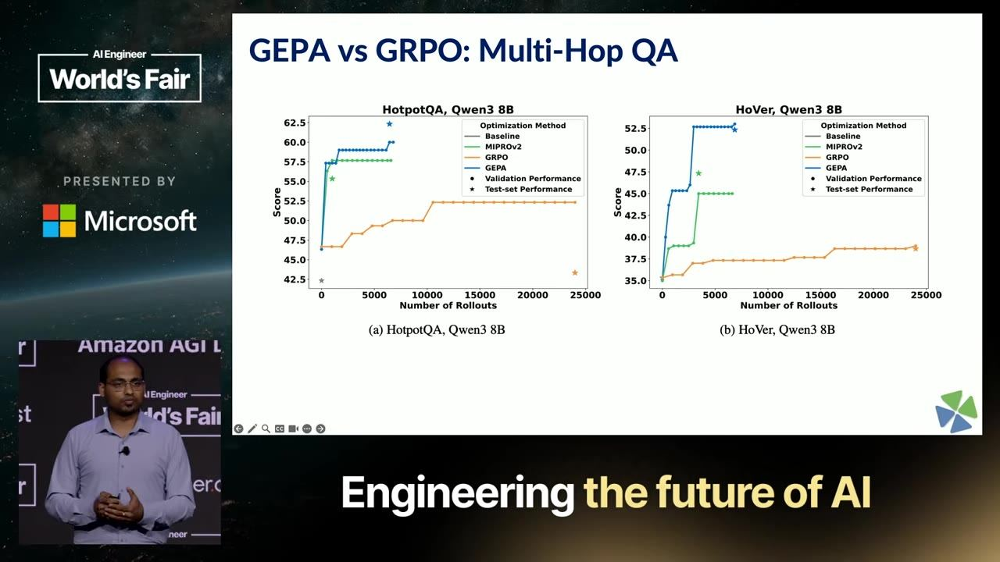
sábado, 26 set 2026 Agentes que melhoram a si mesmos 7 talks · 2 essenciais · Agentes, Evals, Infraestrutura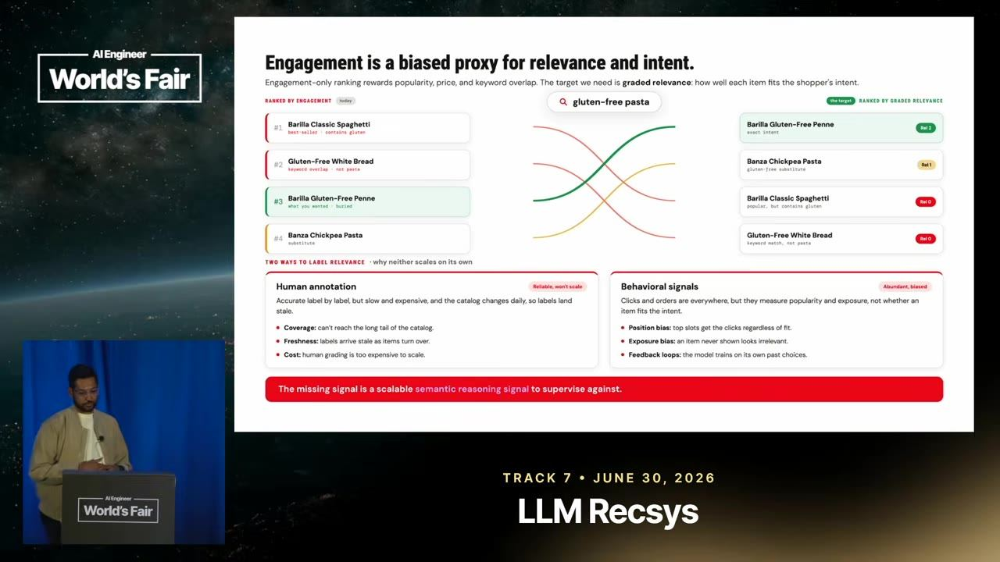
sexta, 25 set 2026 Recomendação e revisão na era dos LLMs 4 talks · 2 essenciais · Engenharia de software, Dados e RAG, Modelos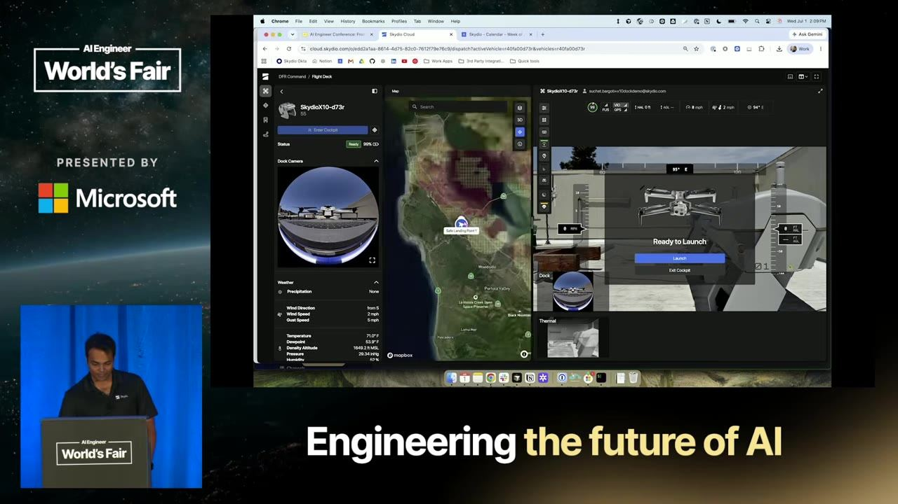
quinta, 24 set 2026 Robôs no mundo real: dados, corpo e confiabilidade 6 talks · 2 essenciais · Agentes, Dados e RAG, Modelos, Pesquisa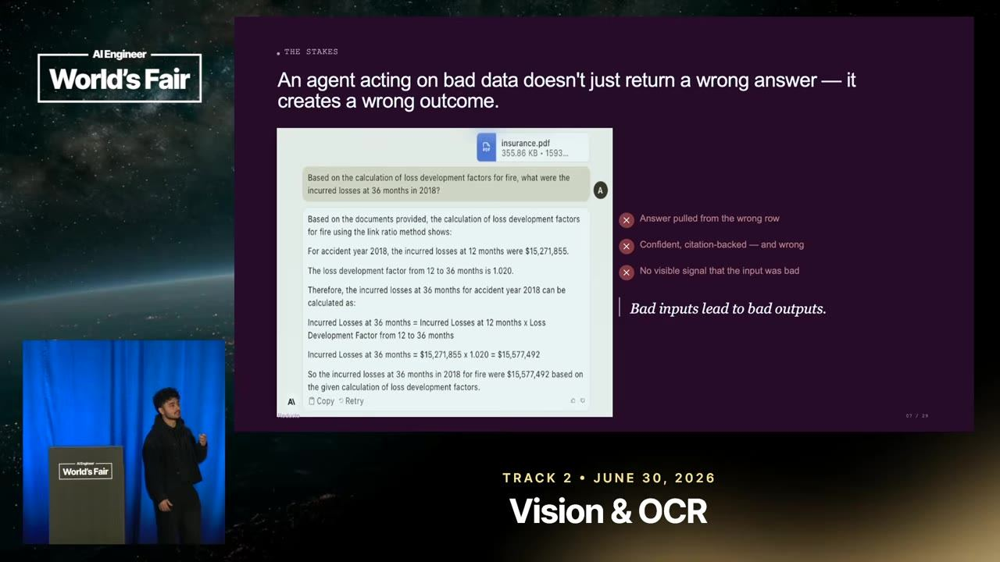
quarta, 23 set 2026 Visão e documentos: o que o modelo realmente enxerga 8 talks · 3 essenciais · Agentes, Dados e RAG, ModelosLevar meu progresso para outro aparelho
O que você marcou como estudado fica salvo só neste navegador. Para continuar no celular ou no notebook, copie o link abaixo e abra no outro aparelho.